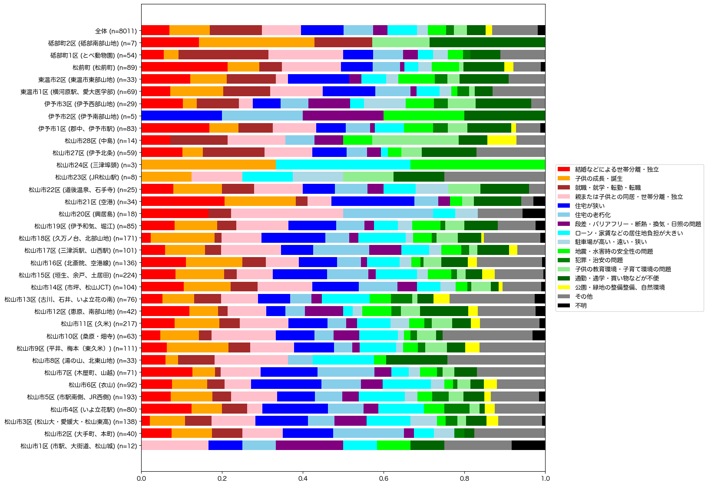

解説 17
各地域からの転出理由を図1に示します。 郊外部では、結婚による世帯分離・独立による転出が多いです。 住居に関する課題では、中心部の松山市2区 (大手町、本町、味酒)や、郊外部の松山市17区 (JR三津浜駅、山西、松ノ木)、伊予市1区 (郡中、伊予市駅)では駐車場の問題による転居が多い。 郊外部の松山市8区 (湯の山、北東山地), 12区 (久谷、荏原、浄瑠璃), 21区 (空港), 27区 (北条)では、通勤・通学・買い物などの不便を転居理由にあげる人が、他地域と比較して多い。

図1：他地域への転出理由